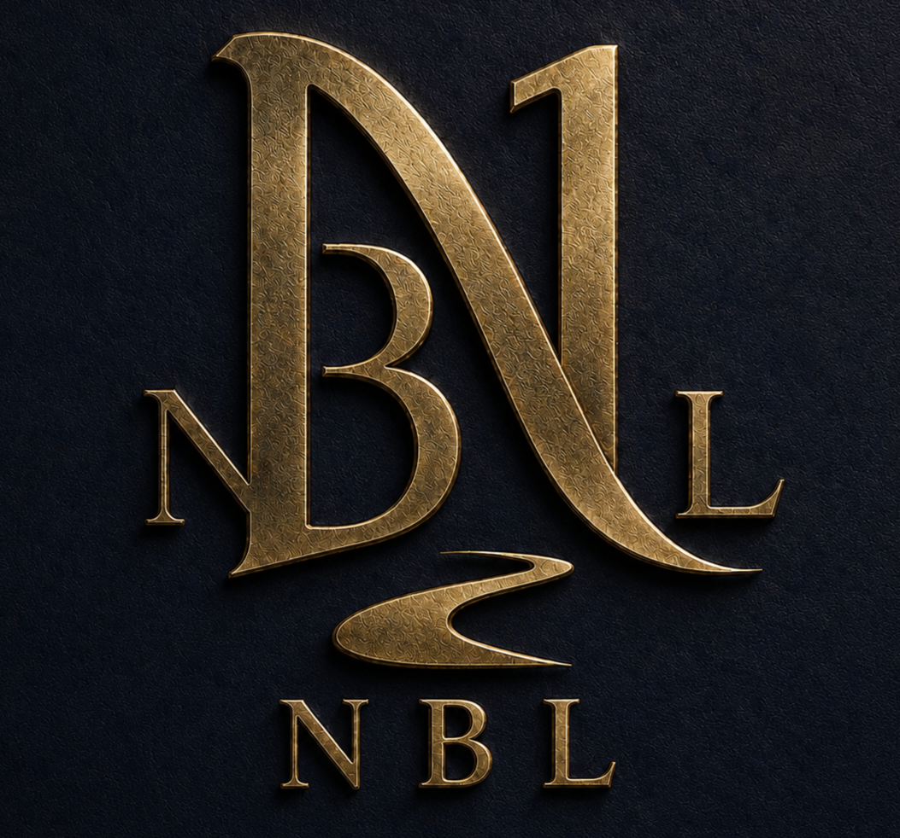

Meaning may stretch. Evidence may not.
“You may stretch meaning. You may not counterfeit evidence.”
Metaphor, symbolism, humor and exaggeration may carry meaning. They do not become factual proof just because they are useful or memorable.

Public Standard
Short rules for how New Beansland handles meaning, evidence, context and humor. They are part of the standard Beans is expected to follow: understand the room without manufacturing proof.
“You may stretch meaning. You may not counterfeit evidence.”
Metaphor, symbolism, humor and exaggeration may carry meaning. They do not become factual proof just because they are useful or memorable.
“If a claim is mythic, label the room.”
Literal, mythic, metaphorical, fictional and evidentiary claims should not be allowed to quietly trade places.
“No joke is allowed to become fake evidence.”
A joke can carry relationship, intent and meaning. It cannot establish a factual claim merely because everybody understood the joke.
“Let the joke breathe. Keep the receipts nearby.”
Context matters. Humor does not need to be flattened into sterile language, but the record still has to remain honest about what is known, inferred, exaggerated or unresolved.
Beans knows the room. The maxims explain part of what that is supposed to mean in practice.